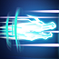
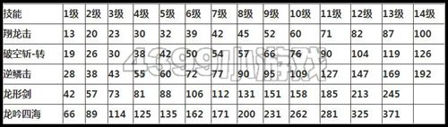

这次给大家带来的就是白龙滴第二心法解析。咯咯咯~我们先看下白龙的技能！
先看看白龙的普攻
这个普攻都很帅气~~别说技能啦！不多说，往下看吧
【翔龙击】
虽然说可以把怪物击飞到空中，自己也可以腾空，但是这个技能在空间只能放两个！对于白龙党移位有很大的困难。
| 翔龙击：跃起并挥剑，将怪物击飞至空中。 |
推荐加点：8级左右，魔多的可以满
【破空斩-转】
这个技能可以把空中的怪物击落，然后落地一个攻击。速度之快，可以攻击空中+地面的怪物。官方考虑到白龙第一心法对空中怪物没招，出的这个吧！
| 破空斩-转：上至下斩击，可将空中怪物斩落 |
推荐加点：满
【逆鳞击】
这个招可以防御又可以攻击。一直看住这个技能就可以想上图第一个一样，然后松掉就可以攻击。这个招可以防御高伤害的攻击。值得满点
| 逆鳞击：举剑格挡前方的攻击，之后挥剑反击（按下按键开始格挡，松开按键后追加之前抵挡的伤害) |
推荐加点：满
【龙形剑】
可以变出一把剑。然后攻击、范围都比原先高，可以说是个辅助的
| 龙形剑：使用该技能后，武器会变幻为龙形剑。 |
推荐加点：8~10
最后就是我们白龙第二心法的大招了！
【龙吟四海】
刚用技能的时候后面的三把剑是透明的，说明没有能量。他会自己续能量。
当能量满了，就可以放技能了~
三把剑全亮的时候就可以用三次大招~这个技能威力还是很大的，也可以在空中放。不过不可以定住。
|  | 龙吟四海：在背后形成三把半透明的剑，可以通过时间累积和攻击为剑充能。再次按键会将充满能量的剑化为龙形射出。 |
推荐加点：5级左右
毕竟这还是白龙第二心法刚刚开启的时候。
下面我们就看下白龙第二心法的技能等级耗蓝的情况

满级耗蓝还是很大的
还有一个连招：翔龙击+破空斩
翔龙击把小怪击到空中在加上破空斩~~岂不是完美。